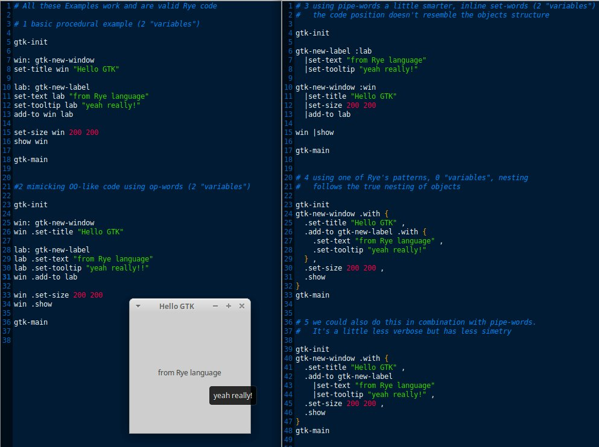

Some Practical Rye > Injected blocks
WORK IN PROGRESS
Op-words, pipe-words and left-set-words accept first argument from the left. In this pattern we preinject a block of code with a left value.
Multiple functions that accept an argument and a block of code use the mechanism of (so far called) injected blocks.
1 + 2 |with { + 30 |prn } |prn
// prints: 33 33
1 + 2 |pass { + 30 |prn } |prn
// prints: 33 3
loop 3 { +10 |prn }
// prints: 10 11 12
names: { "Jim" "Jane" "Anne" }
for names { .prn }
// prints: Jim Jane Anne
db: open sqlite://main.db
names: { "Jim" "Jane" "Anne" }
for names { :name
exec db { insert into pals ( name ) values ( ?name ) }
print name +_ "added"
}
// prints:
// Jim added
// Jane added
// Anne added
A comma is a so called expression guard in Rye. It can be inserted between expressions to assure you about expression borders. Inside an injected block it has additional behaviour: It reinjects the argument.
1 |with { + 100 |prn , + 10 |prn } |prn
// prints 101 11 11
1 |pass { + 100 |prn , + 10 |prn } |prn
// prints 101 11 1
{ "Jane" "Jim" }
|for { .embed "Hi {{}}!" |prn , prn "Huh?" , .embed "Bye {{}}!" |prn }
// prints:
// Hi Jane! Huh? Bye Jane!
// Hi Jim! Huh? Bye Jim!
Here we look at simple GTK example and how it looks if we use the injected block mechanics.
// example without the injected block mechanics
gtk-init
win: gtk-new-window
win .set-title "Hello GTK"
lab: gtk-new-label
lab .set-text "from Rye language"
lab .set-tooltip "yeah really"
win .add-to lab
win .set-size 200 200
win .show
gtk-main
// example using injected blocks
gtk-init
gtk-new-window .with {
.set-title "Hello GTK"
.add-to new-gtk-label .with {
.set-text "from Rye language" ,
.set-tooltip "yeah really!"
} ,
.set-size 200 200 ,
.show
}
gtk-main
This is taken from my code experiments below:
